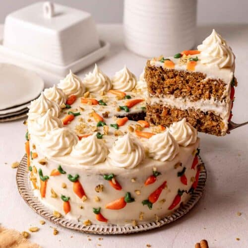

Carrot cake

Description
Carrot cake is a staple of any great meal! Creamy and
delicious with just the write amount of spice,
it's all the best parts of dessert wrapped into
one scrumptious package.
What are you waiting for? Let's get cooking!
Ingredients
- 2 cups white sugar
- 4 cups confectioners' sugar
- 1 and 1/4 cups vegetable oil
- 4 large eggs
- 3 tsp vanilla extract
- 2 cups flour
- 2 tsp baking soda
- 2 tsp baking powder
- 2 tsp ground cinnamon
- 1/2 tsp salt
- 3 cups grated carrots
- 2 cups chopped pecans
- 1/2 cup butter
- 8 oz cream cheese
Steps
- Gather ingredients and preheat oven to 350 degrees F.
Grease and flour a 9x13-inch pan.
- Beat sugar, oil, eggs, and 2 teaspoons vanilla
together in a large bowl with an electric mixer
until well combined.
- Mix in flour, baking soda, baking powder,
cinnamon, and salt. Stir in carrots,
then fold in pecans.
- Pour into the prepared pan.
- Bake in the preheated oven for about 40 minutes.
Let cool in pan for 10 minutes, then turn out
into a wire rack and cool completely.
- To make the frosting: Beat butter, cream cheese,
confectioners' sugar, and 1 teaspoon vanilla together
in a large bowl with an electric mixer
until smooth and creamy.
- Stir in chopped pecans.
- Frost the cooled cake, serve, and enjoy!
Home